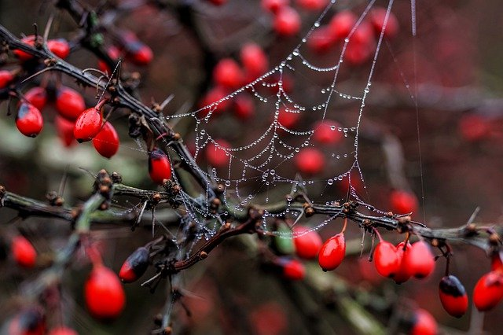

Паутина — секрет паутинных желёз, который вскоре после выделения застывает в форме нитей. По химической природе представляет собой белок, близкий по составу к шёлку. Ее плетут в основном паукообразные и применяют для охоты.
Пауки не прилипают к липким нитям своей собственной паутины благодаря особым волоскам на лапах. Они, во-первых, уменьшают площадь соприкосновения конечности с каплями клея на нитях, а, во-вторых, покрыты особым веществом, резко понижающим липучие свойства клея. Когда паук ставит лапу на нить, капля клея окутывает именно волоски, соскальзывая обратно, как только паук переставляет лапу. Если же взвесить массу паутины. которой можно было бы опутать весь земной шар по экватору, то эта масса составила бы только 340 граммов.